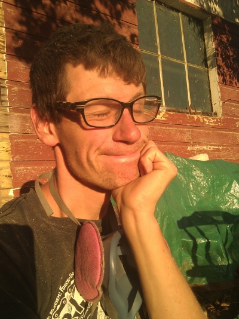

To start, the address of the house is 16150 Placer St, Jamestown, CA.
| Google Maps says the house is here: | ...when it's actually more like here. |
|
(I should really walk across the street some day and see what that "Biv-wak Survival Systems" is.)
| Start in the bay area. |  |
| Head EAST on 580. | .svg/480px-I-580_(CA).svg.png) |
| At the 580/205 split, stay on 205 towards Tracy. |  |
| Following the signs to Sonora, merge onto I-5, then 120, then (after a few minutes on 120) 99. Stay in the right lane on 99, exiting onto Yosemite Ave. Turn right. (You're still following Hwy 120.) |  |
| Drive for, I don't know, 20, 25, 30 minutes, something like that, until you hit Oakdale. In Oakdale, turn left at the big traffic light, which probably has a sign for Sonora near it. | |
| After ~25-30 minutes, keep an eye out for Bell Mooney Road. It's kind of sudden, but you can do it! Turn right on Bell Mooney, go across the creek, cross the train tracks, go around some curves, then, at the stop sign, turn right. Follow this road until it ends in a "T". Turn right. | |
| About 100 feet ahead or so, you'll see this oak tree and driveway, and likely that red truck -- turn right. | |
| Down the driveway a bit you'll see a big 2-story house: |  |
| That's me -- come have a beer! |  |
If you get lost, my phone number is 510 381 0613. See you soon!
EDITED 2:11 PM
I forgot -- I have this sign: